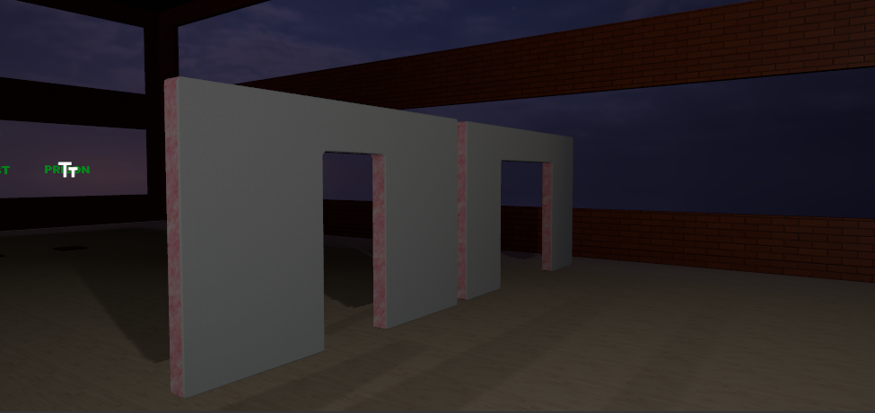
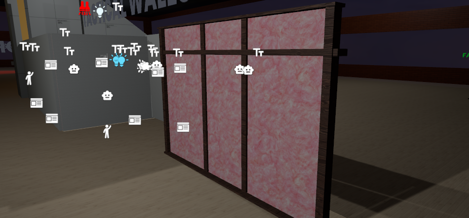

Tactical wall material pass
This is a focused AfterDark update for the tactical wall work.
The wall material pass is moving in the right direction, even if it is not fully dialed in yet. The big improvement in this pass is the added insulation layer. That layer gives the wall interior a much better read during placement, inspection, and destruction. The wall no longer feels like one flat grey shell with damage punched through it. It now has a clearer construction stack: surface, interior fill, frame, and exposed breach.
That matters because these walls are not just scenery. They are supposed to become tactical cover, destructible support pieces, and readable player-built structure. If the material layers do not communicate what the wall is made of, damage starts to feel arbitrary. With insulation visible inside the wall, bullet and breach damage has more visual context.


Better than it was, not done yet
The current result is better than the previous material state, but this is still a work-in-progress pass.
The insulation is the strongest part of the update. It adds a needed middle layer and makes destroyed sections easier to understand at a glance. The grey outer wall surface is also reading more cleanly as a neutral gameplay surface, which helps the damage stand out instead of fighting with noisy texture work.
The weaker parts are still obvious:
- the wood material is not accurate yet,
- the frame treatment needs another pass,
- some edges still read more like prototype geometry than finished construction,
- and the wall still needs more tuning under real gameplay lighting and repeated damage.
That is acceptable for this stage. The point of this pass was not to call the tactical wall material work finished. The point was to get the wall closer to a readable layered object so future destruction, repair, and upgrade work has a stronger visual base.
Why the insulation layer matters
The insulation layer is doing more than adding color.
It gives the tactical wall a middle state between "solid wall" and "open hole." That is important for a destructible structure because most of the gameplay happens in the transition. Players need to understand where the wall is still intact, where it has been weakened, and where damage has opened a real sightline or route.
In first person, that extra layer also helps the damage feel less abstract. When the breach exposes pink insulation and torn inner surfaces, the hole reads as something carved out of a constructed object instead of a decal or a missing chunk.
That is the direction the wall needs to keep moving toward: not just more damage, but more understandable damage.
Next pass
The next material pass should focus on the pieces that are still breaking the illusion:
- make the wood and frame material more believable,
- improve the frame proportions and edge treatment,
- tune the insulation so it stays readable without becoming too loud,
- keep checking the wall in both clean placement and active destruction states,
- and make sure the final look supports gameplay readability before it chases detail.
This update is a good step. The tactical wall still needs art cleanup, but the added insulation gives it a much stronger construction read than it had before.
Signed, Nightshift